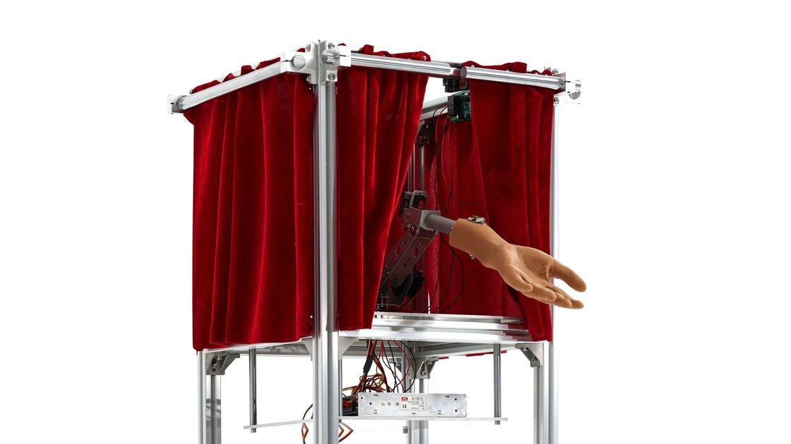
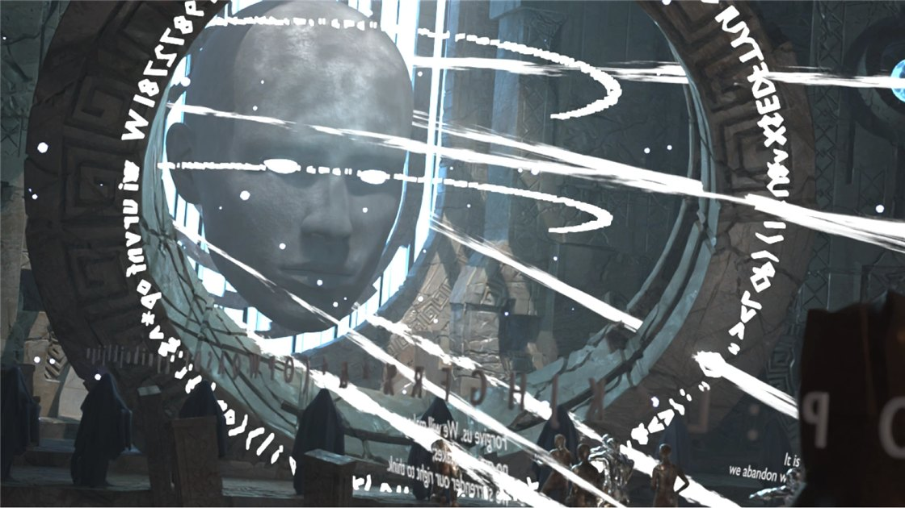
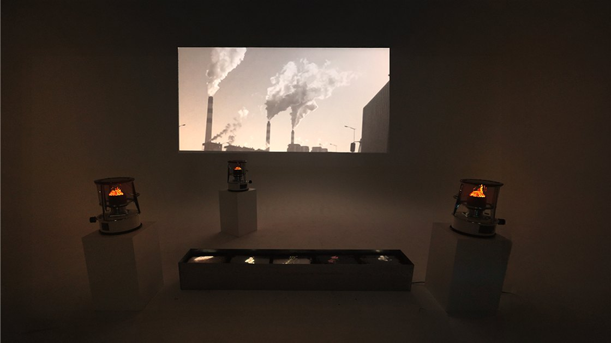
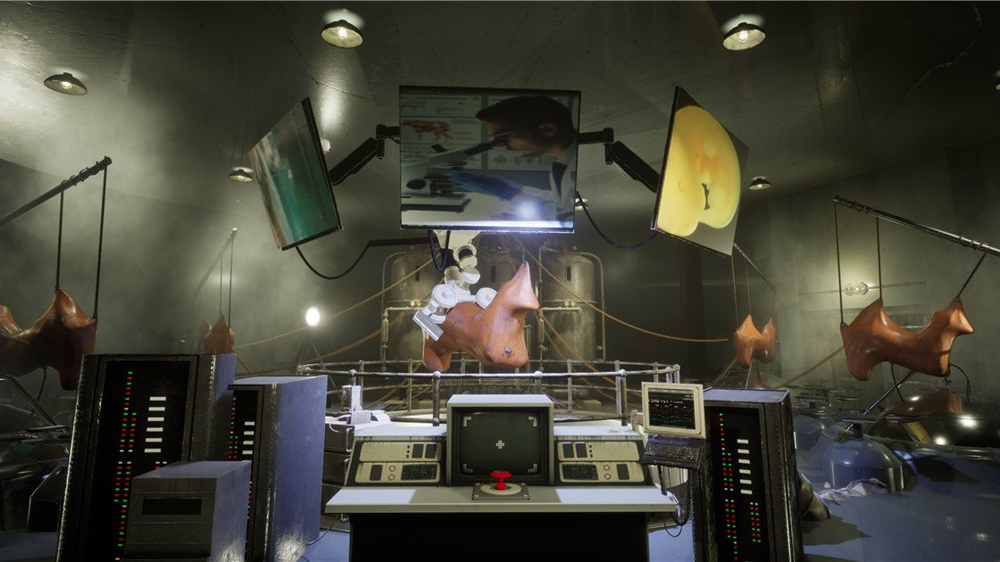

Project
-
Coutesy Protocol
Robotic Installation · Creative Computing

This project uses the metaphor of politeness as a social script to explore how cultural expectations, hierarchy, and the desire for acceptance gradually shape people’s language and behaviour. This interactive physical computing installation makes the invisible processes of self-regulation, conformity, and performed politeness tangible through digital evaluation and mechanical response.
-
Certainty
3D Modeling · Animation

Across the temple, a world governed by prediction unfolds. Around an algorithmic core, the figures repeat their gestures, gradually falling into step until only hollow silhouettes remain. As AI makes answers feel certain, Certainty asks how relying on those answers reshapes the way we acquire knowledge and erodes our desire to experiment. When we increasingly turn to AI to resolve uncertainty, how much agency do we retain in deciding what to question, what to test, and what to accept as knowledge?
-
Tampered Spring
Installation Art · Experimental Video · TouchDesigner

Tampered Spring is an installation and experimental video work that explores how human activity and urban development disrupt the rhythms of climate and natural flora. Inspired by long-term observations in my hometown of Kunming, the project focuses on the increasingly irregular flowering patterns of cherry and camellia trees. Through this work, I aim to critique urbanization and societal interference with nature, making visible the ways in which human actions reshape the environment and the ecosystem.
-
Conscious Industry Inc.
Narrative Game · 3D Modeling

The Conscious Industry Inc installation immerses participants in a digital farm where human embryos are cultivated and transformed into labor-optimized entities. However, unlike traditional installations, the audience here is not a passive observer—they are invited to manipulate, question, or disrupt the capitalist machinery itself.